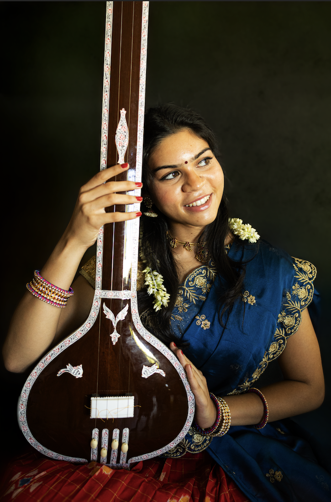
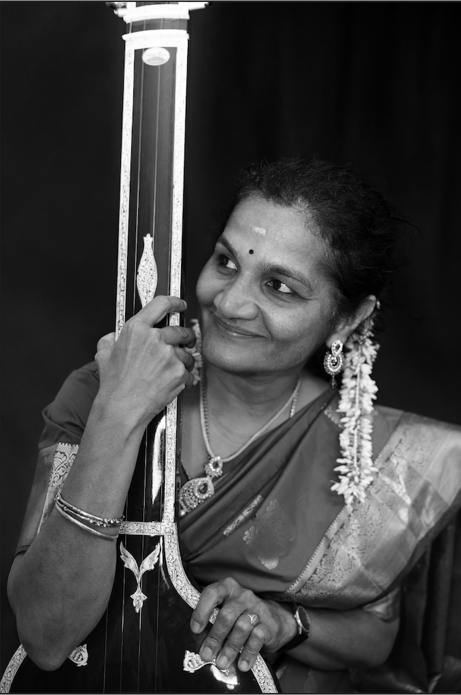
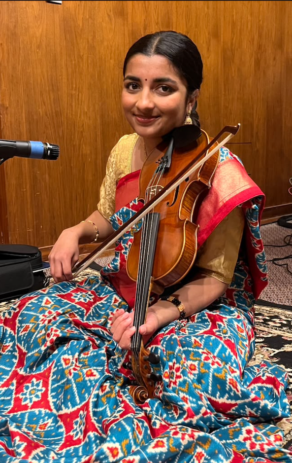
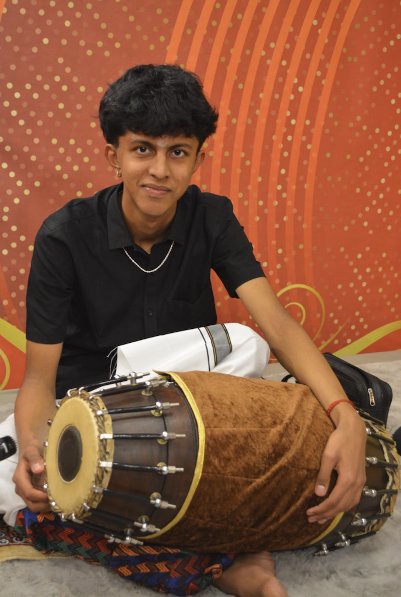

Meet the Artists & Guru
Paramacharya School of Music • Musicians and Dignitaries bringing the Vocal Graduation Concert to life.

Kum. Sahana Kumar
Carnatic Vocalist • Disciple of Guru Smt. Geetha RaviKum. Sahana Kumar has been immersed in the sacred tradition of Carnatic classical vocal music for over 11 years under the dedicated and nurturing guidance of Guru Smt. Geetha Ravi at Paramacharya School of Music. Through years of disciplined vocal training, Sahana has developed a profound command over sruti shuddham (tonal purity), laya gnanam (rhythmic precision), and sahitya bhava (emotive interpretation of lyrical sanctity).
Beyond her individual practice, Sahana is deeply rooted in the youth classical music community. An active leader in the Carnatic Chamber Concerts (CCC) organization, she served as the Senior Editor of the CCC magazine for three years, curating articles celebrating young musicians and contributing through regular solo vocal presentations across regional stages.
Sahana is also an accomplished Bharatanatyam dancer who completed her dance Arangetram in 2024 through Vishwa Shanthi Dance Academy. This rare synergy between dance and vocal music has gifted her a unique holistic appreciation for South Indian classical rhythm, gamakas, and spiritual storytelling.
At Saratoga High School, where she is a senior, Sahana is deeply engaged in the performing arts as a member of Choir, Drama, and Musical Theatre, and excels in the Media Arts Program (MAP). Outside the auditorium, she is a Varsity Water Polo goalkeeper and a passionate volunteer with USKids4Water, teaching English and mentoring students in rural Tamil Nadu.
- 11+ Years Carnatic Vocal Sadhana with Guru Smt. Geetha Ravi
- Senior Editor & Performer, Carnatic Chamber Concerts (CCC)
- Bharatanatyam Arangetram Graduate (VSDA, 2024)
- Saratoga High School Choir, Drama & Media Arts
- USKids4Water Youth Leader & Educator

Guru Smt. Geetha Ravi
Guru & Director, Paramacharya School of MusicGuru Smt. Geetha Ravi is a distinguished Carnatic vocalist and an esteemed guru in the San Francisco Bay Area, celebrated for her unwavering adherence to classical authenticity, crystalline diction, and deep musical bhava. Trained under legendary lineages of the Carnatic tradition, she brings decades of concert performance experience and pedagogical excellence to her disciples.
As the guiding force behind Paramacharya School of Music, Smt. Geetha Ravi instills in her students a comprehensive foundation in classical music—emphasizing pristine pitch fidelity, breath control, the nuances of intricate gamakas, and the intellectual rigor of manodharma improvisation (alapana, neraval, and kalpanaswarams).
Her disciples regularly perform at prominent classical festivals and prestigious youth platforms across the United States and India. Her nurturing mentorship balances high traditional standards with encouragement, inspiring students like Sahana to discover their authentic artistic voice.
- Director & Founder, Paramacharya School of Music
- Decades of concert performance and pedagogical excellence
- Exemplary lineage adhering to authentic Carnatic traditions
- Mastery in teaching advanced Manodharma & Tala intricacies
Sangeetha Kalanidhi Sri. Neyveli R. Santhanagopalan
Sangeetha Kalanidhi Sri. Neyveli R. Santhanagopalan is one of the most revered and celebrated maestros of Carnatic vocal music in the world today. Renowned for his orthodox adherence to traditional pathanthara, encyclopedic knowledge of ragas and musicology, and spellbinding manodharma sangeetham, he has performed across the globe for over four decades.
As an extraordinary guru and cultural icon, his presence as Chief Guest bestows supreme blessings upon Sahana's graduation concert and the Paramacharya School of Music family.
Accompanist Biographies
A traditional Carnatic Katcheri is an elevated collaborative dialogue between the lead vocalist, the melodic violinist, and the percussion master.

Kum. Aishwarya Anand
Violin (Pakkavadhyam)Kum. Aishwarya Anand is a talented, sensitive violinist who has undergone rigorous classical training under the illustrious guidance of Vidushi Smt. Anuradha Sridhar (celebrated Lalgudi lineage).
Aishwarya provides a pristine, melodious foundation for the concert. Her sensitive accompaniment mirrors the vocalist's nuanced raga phrasing, elevates the manodharma passages during Alapana and Neraval, and engages in spirited, crisp kalpanaswara dialogues across complex tala cycles.
She actively performs across youth festivals and sabhas in the San Francisco Bay Area and beyond.
- Disciple of Vidushi Smt. Anuradha Sridhar (Lalgudi Bani)
- Pristine tonal quality and lyrical bowing fidelity
- Accomplished accompanist across classical youth sabhas

Chi. Anirudh Suresh
Mridangam (Pradhana Laya Vadhyam)Chi. Anirudh Suresh is a powerhouse young mridangist who has undergone extensive, disciplined gurukulam training under the renowned mridangam maestro Vidwan Sri Ravindrabharathy Sridharan (Nadasudha).
Anirudh anchors the concert with resounding naadham, pristine stroke clarity, and mathematical virtuosity. He excels in sarvalaghu accompaniment, anticipating the vocalist's pauses and accentuating the lyrical beauty of each piece with crisp theermanams and structured korvais.
During the centerpiece Tani Avartanam, his commanding control over diverse nadais and intricate rhythmic calculations promises an exhilarating percussion presentation for the rasikas.
- Disciple of Vidwan Sri Ravindrabharathy Sridharan (Nadasudha)
- Pristine stroke clarity, rich naadham & dynamic laya command
- Featured accompanist across Bay Area concerts and festivals